Bedienungsanleitung
Der Stream Recorder ist eine App für Home Assistant. Er nimmt Internetradio-Streams zu festen Zeiten auf und legt sie als MP3-Dateien im Medienordner ab. Du bedienst ihn über die Seitenleiste von Home Assistant, auf dem Rechner, Tablet oder Handy.
1. Überblick
So läuft eine Aufnahme ab:
- Sender anlegen. Du speicherst die Adresse eines Streams einmal unter einem Namen, z. B. „sunshine live Lounge“.
- Auftrag anlegen. Du legst fest, wann und wie lange aufgenommen wird, optional mit Vor- und Nachlauf und Wiederholung.
- Fertig. Zur Startzeit verbindet sich der Recorder mit dem Stream und speichert ihn unverändert. Am Ende liegt die Datei unter
/media/stream-recorder/recordund das Ergebnis steht in der Liste Erledigt.
Der Recorder läuft als App im Hintergrund von Home Assistant. Die Oberfläche muss dafür nicht offen sein, sie dient nur zum Planen und Nachsehen.
2. Installation
Die App braucht Home Assistant OS oder eine Supervised-Installation, also eine Installation mit App Store (früher „Add-on Store“).
- In Home Assistant Einstellungen › Apps › App Store öffnen.
- Oben rechts über das Drei-Punkte-Menü Repositories wählen und
https://github.com/BreitiDE/ha-stream-recorderhinzufügen. - Unten in der Liste erscheint Stream Recorder. Öffnen und Installieren klicken.
- Optional unter Konfiguration den Speicherordner und den direkten Zugriff einrichten (siehe unten).
- Starten klicken und In der Seitenleiste anzeigen einschalten.
Konfiguration der App
| Option | Bedeutung |
|---|---|
| Speicherordner | Standard /media/stream-recorder. Muss unter /media oder /share liegen. Darunter legt die App die Ordner record, title und deleted an |
| Benutzername, Passwort | nur für den direkten Zugriff ohne Home Assistant. Beide leer = direkter Zugriff aus |
| Log-Level | wie ausführlich die App ins eigene Log schreibt: debug, info (Standard), warning, error |
| Netzwerk: Port | Port für den direkten Zugriff, z. B. 8765. Leer = nur über die Seitenleiste |
Nach einer Änderung der Konfiguration die App neu starten.
nas. Sie erscheint dann unter /media/nas. Als Speicherordner der App /media/nas/stream-recorder eintragen.Updates zeigt Home Assistant wie bei jeder App an. Aufträge, Sender, Einstellungen und Aufnahmen bleiben dabei erhalten. Laufende Aufnahmen werden abgebrochen, also besser zwischen zwei Aufnahmen aktualisieren. Das Backup von Home Assistant sichert die Datenbank der App mit, die Aufnahmen im Medienordner nur, wenn Du den Medienordner ins Backup aufnimmst.
3. Öffnen und Anmelden
Über die Seitenleiste (empfohlen)
Klicke in der Seitenleiste von Home Assistant auf Stream Recorder. Eine eigene Anmeldung gibt es hier nicht, Home Assistant hat Dich schon angemeldet. Oben rechts steht Dein Name aus Home Assistant. Das funktioniert auch in der Companion-App und über Nabu Casa von unterwegs.
Direkt im Browser (optional)
Wenn Du die Oberfläche ohne Home Assistant öffnen willst, trage in der Konfiguration der App Benutzername, Passwort und einen Port ein, z. B. 8765. Dann öffnest Du http://<IP-von-Home-Assistant>:8765/ und meldest Dich an.
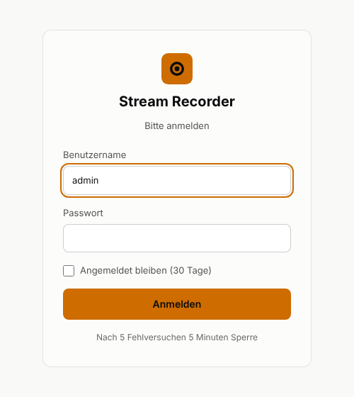
- Angemeldet bleiben hält die Anmeldung 30 Tage. Ohne den Haken endet sie nach 12 Stunden.
- Nach 5 Fehlversuchen innerhalb von 5 Minuten ist die Anmeldung von diesem Gerät aus für 5 Minuten gesperrt.
- Ändert sich Benutzername oder Passwort in der Konfiguration, sind alle bisherigen Anmeldungen ungültig.
- Abmelden oben rechts gibt es nur beim direkten Zugriff.
4. Die Oberfläche
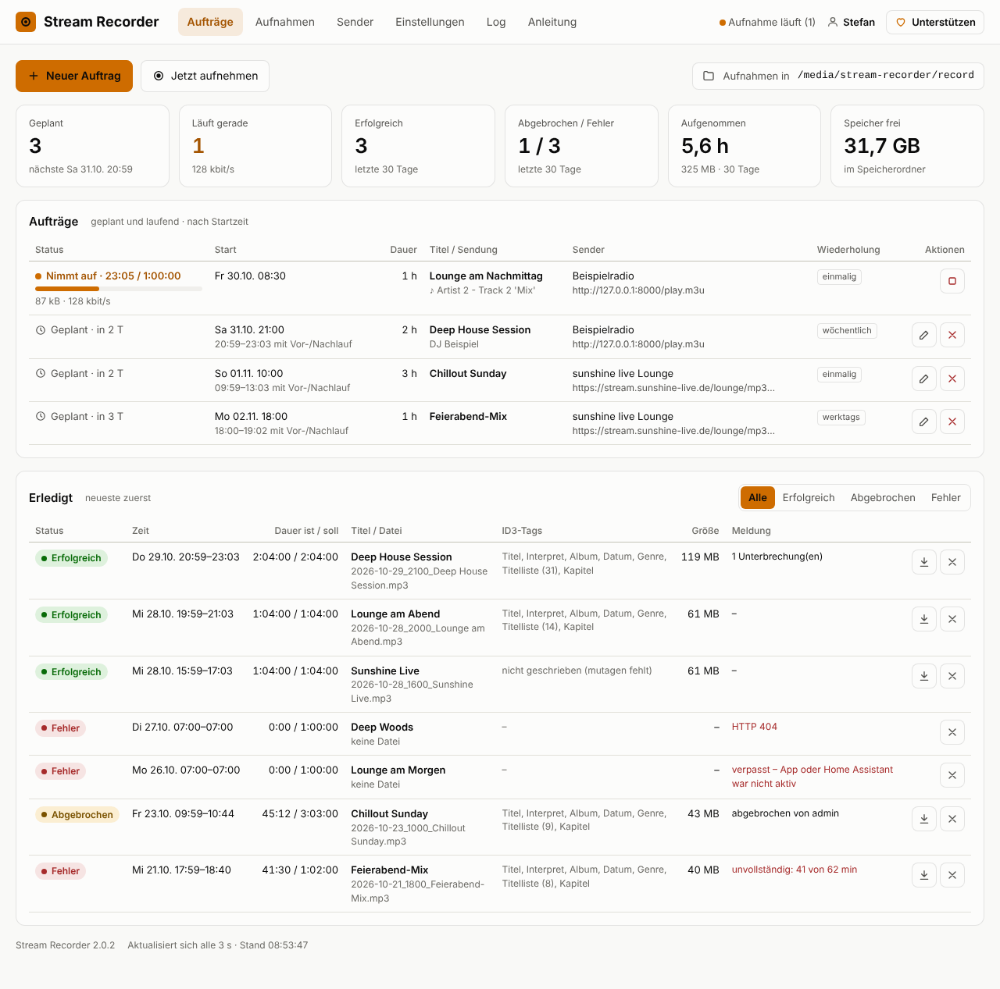
Kopfzeile und Menü
| Element | Funktion |
|---|---|
| Aufträge | Hauptseite mit Statistik, geplanten und erledigten Aufnahmen |
| Aufnahmen | alle Dateien: abspielen, Tags bearbeiten, umbenennen, schneiden, löschen (Abschnitt 10) |
| Sender | gespeicherte Streams anlegen, testen, ändern, löschen |
| Einstellungen | Sprache, Papierkorb, Dateinamen, Vor- und Nachlauf, Einzeltitel schneiden, Systeminfo |
| Log | die letzten Einträge des App-Logs |
| Anleitung | diese Seite. Mit ← zur Oberfläche oben rechts geht es zurück |
| Status-Punkt | grün = bereit, orange = Aufnahme läuft, rot = App nicht erreichbar |
| Unterstützen | öffnet die PayPal-Seite für eine kleine Spende. Beim Überfahren mit der Maus erscheint ein kurzer Dank |
Aktionen und Statistik
- Neuer Auftrag: Aufnahme planen (Abschnitt 6), Jetzt aufnehmen: sofort starten (Abschnitt 7).
- Daneben steht der Ordner, in dem die Aufnahmen landen.
| Kachel | Bedeutung |
|---|---|
| Geplant | Anzahl der wartenden Aufträge und Startzeit des nächsten (inklusive Vorlauf) |
| Läuft gerade | laufende Aufnahmen und die aktuelle Datenrate zusammen |
| Erfolgreich | erfolgreiche Aufnahmen der letzten 30 Tage |
| Abgebrochen / Fehler | beide Zahlen für die letzten 30 Tage |
| Aufgenommen | Stunden und Datenmenge der letzten 30 Tage |
| Speicher frei | freier Platz im Speicherordner |
Die Seite aktualisiert sich alle 3 Sekunden von selbst.
5. Sender einrichten
Ein Sender ist ein gespeicherter Stream mit Namen. Der Lounge-Stream von sunshine live ist beim ersten Start schon eingetragen.
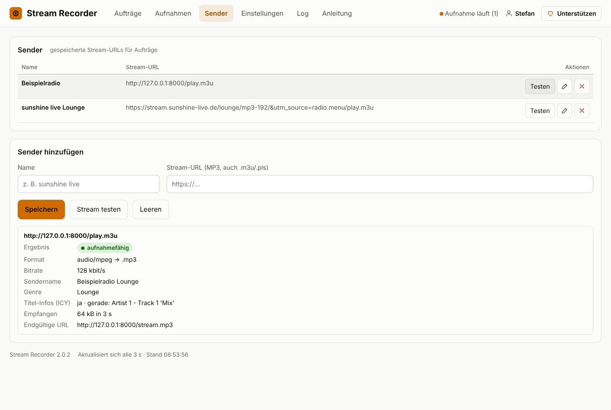
- Menü Sender öffnen.
- Unter Sender hinzufügen einen Namen und die Stream-URL eintragen.
- Mit Stream testen prüfen, ob der Stream aufnahmefähig ist.
- Speichern.
Als URL eignet sich die direkte Stream-Adresse oder eine Playlist-Adresse (.m3u, .pls). Playlists und Weiterleitungen löst der Recorder selbst auf. Die Adresse findest Du meist auf der Webseite des Senders unter „Streams“, „Webradio“ oder „Player“, oder in Radio-Verzeichnissen.
| Testergebnis | Bedeutung |
|---|---|
| Ergebnis | aufnahmefähig oder nicht aufnahmefähig mit Grund |
| Format | Audioformat und die spätere Dateiendung. MP3 ergibt .mp3 mit ID3-Tags, AAC ergibt .aac |
| Bitrate | Qualität laut Sender, z. B. 192 kbit/s |
| Titel-Infos (ICY) | „ja“ heißt: der Stream sendet die laufenden Musiktitel mit. Daraus entsteht die Titelliste in der Datei |
| Endgültige URL | die Adresse nach allen Weiterleitungen |
Bestehende Sender änderst Du mit dem Stift, löschst sie mit dem ×. Bereits geplante Aufträge behalten ihre URL.
6. Aufnahme planen
Klicke auf Neuer Auftrag.
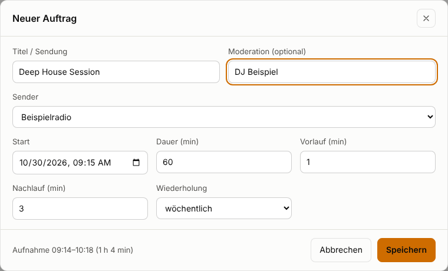
| Feld | Bedeutung |
|---|---|
| Titel / Sendung | Pflicht. Landet im Dateinamen und im ID3-Titel |
| Moderation | optional. Wird als Interpret in die Datei geschrieben |
| Sender | einer der gespeicherten Sender. Mit Andere URL … trägst Du eine Adresse nur für diesen Auftrag ein |
| Start, Dauer | Beginn der Sendung und Länge in Minuten (1 bis 1440) |
| Vorlauf, Nachlauf | so viele Minuten vor dem Start beginnt bzw. nach dem Ende endet die Aufnahme (0–60 bzw. 0–120) |
| Wiederholung | einmalig, täglich, werktags (Mo–Fr) oder wöchentlich am selben Wochentag |
- Die Zeiten gelten in der Zeitzone von Home Assistant, auch über die Zeitumstellung hinweg.
- Aufträge dürfen sich überschneiden. Der Recorder nimmt dann mehrere Streams gleichzeitig auf.
- Wiederkehrende Aufträge springen nach jeder Aufnahme auf den nächsten Termin. Einmalige verschwinden nach der Aufnahme und stehen dann unter Erledigt.
7. Sofort aufnehmen
Jetzt aufnehmen startet eine Aufnahme ohne Planung, z. B. wenn gerade etwas Gutes läuft. Das geht auch aus einer Automation heraus (Abschnitt 14).
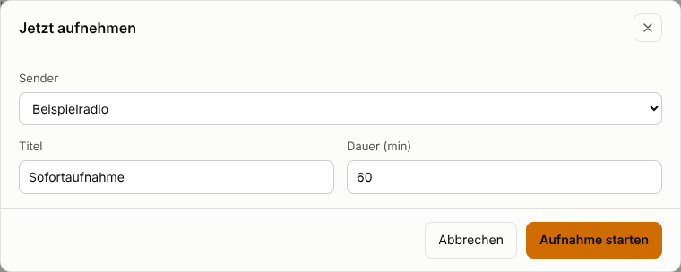
Die Aufnahme beginnt innerhalb einer Sekunde und erscheint oben in der Auftragsliste. Willst Du früher aufhören, brich sie einfach ab. Die bis dahin aufgenommene Datei bleibt erhalten.
8. Aufträge verwalten
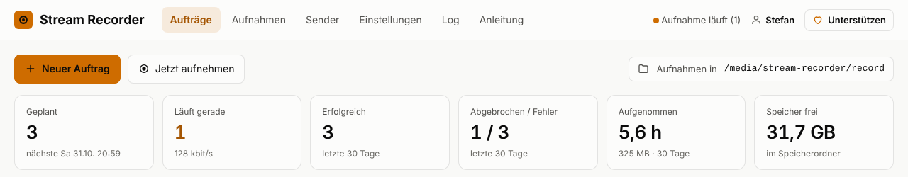
| Anzeige / Knopf | Bedeutung |
|---|---|
| Geplant · in 2 h | wartet auf die Startzeit |
| Nimmt auf · 23:04 / 1:00:00 | läuft. Darunter Fortschrittsbalken, Dateigröße, Datenrate und, falls gesendet, der aktuelle Musiktitel (♪) |
| „2× neu verbunden“ | der Stream war kurz weg, die Aufnahme läuft in derselben Datei weiter |
| Stift / × | Auftrag bearbeiten (nur solange er nicht läuft) / löschen |
| Quadrat | laufende Aufnahme abbrechen. Die Datei bis hierhin bleibt, der Eintrag erscheint als Abgebrochen |
9. Erledigte Aufnahmen
Die Liste Erledigt zeigt jede beendete Aufnahme, die neueste zuerst. Mit den Knöpfen rechts oben filterst Du nach Status.
| Status | Wann |
|---|---|
| Erfolgreich | Mindestens 97 % der geplanten Zeit sind in der Datei |
| Abgebrochen | von Hand oder per Automation gestoppt, oder die App wurde während der Aufnahme beendet (Neustart, Update) |
| Fehler | keine Daten (z. B. „HTTP 404“), zu kurz („unvollständig: 41 von 64 min“) oder „verpasst“, weil App oder Home Assistant zur Startzeit nicht liefen |
- Mit dem Pfeil lädst Du die Datei direkt herunter.
- Mit × entfernst Du nur den Eintrag aus der Liste. Die Datei bleibt. Einträge älter als 90 Tage verschwinden automatisch.
10. Aufnahmen verwalten und schneiden
Unter Aufnahmen siehst Du alle Audiodateien aus record (Aufnahmen) und title (Einzeltitel), auch in Unterordnern und auch Dateien, die Du selbst hineinkopiert hast.
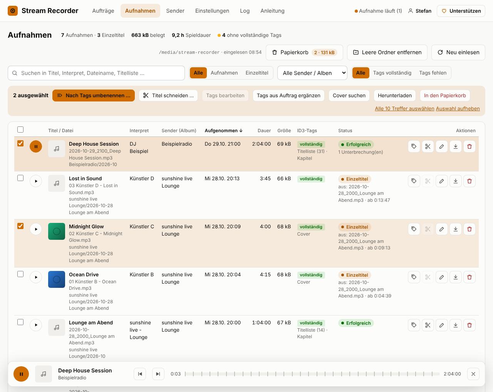
Liste, Suche und Seiten
- Suche findet Wörter in Titel, Interpret, Album, Dateiname, Ordner und in der Titelliste, z. B. die Sendung, in der ein bestimmter Song lief.
- Alle / Aufnahmen / Einzeltitel, Sender / Album und Tags vollständig / Tags fehlen grenzen die Liste ein.
- Ein Klick auf eine Spaltenüberschrift sortiert, ein zweiter dreht die Reihenfolge um. Unten wählst Du 10, 25, 50, 100 oder alle pro Seite.
- Neu einlesen liest die Ordner sofort neu ein, sonst geschieht das beim Öffnen der Seite.
- Status: Ergebnis aus „Erledigt“, Einzeltitel mit Quelle, oder Extern für Dateien, die nicht vom Recorder stammen.
Abspielen
Der runde Knopf in jeder Zeile spielt die Datei im Browser ab. In der Wiedergabeleiste markieren kleine Striche die Kapitel, ⏮ und ⏭ springen zum vorherigen bzw. nächsten Titel (ohne Kapitel 30 Sekunden). Die Wiedergabe läuft weiter, wenn Du im Menü wechselst.
Mehrere Dateien auf einmal
Setze Haken vor die Dateien, der Haken im Tabellenkopf wählt die ganze Seite, Alle … Treffer auswählen alles zum Filter Passende. Die Auswahlleiste bietet Nach Tags umbenennen …, Titel schneiden …, Tags bearbeiten (eine Datei), Tags aus Auftrag ergänzen, Cover suchen, Herunterladen und In den Papierkorb.
Nach Tags umbenennen
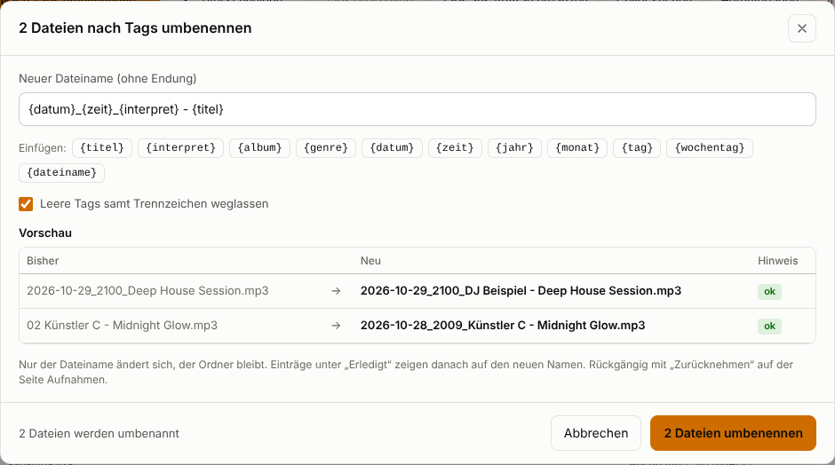
- Platzhalter:
{titel}{interpret}{album}{genre}{datum}{zeit}{jahr}{monat}{tag}{wochentag}{dateiname}. Die englischen Namen ({title},{artist}…) gehen auch. - Nur der Dateiname ändert sich, die Datei bleibt in ihrem Ordner. Es wird nie überschrieben, bei gleichem Namen kommt „(2)“ dazu.
- Die letzte Umbenennung lässt sich mit Zurücknehmen rückgängig machen, auch nach einem Neustart.
Tags bearbeiten
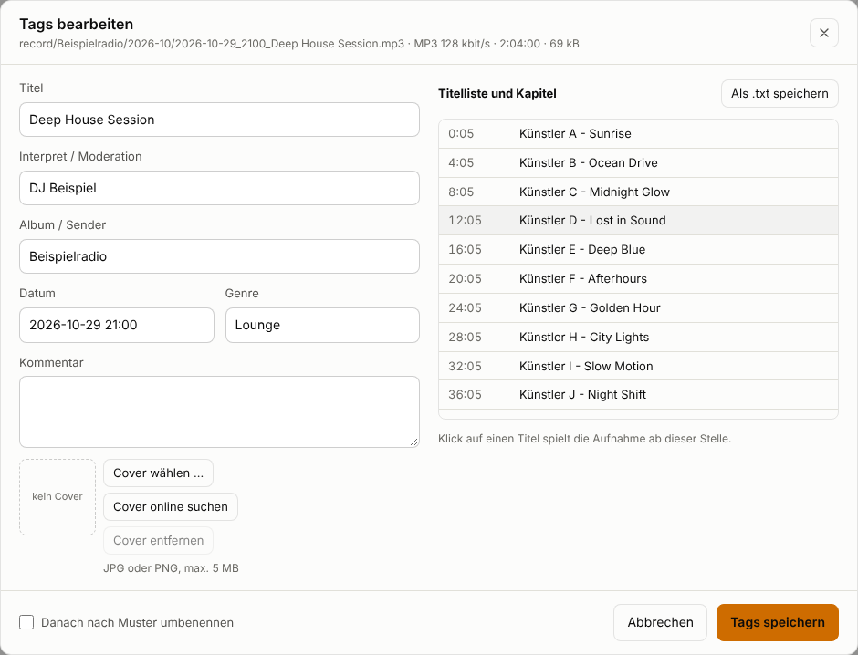
- Titel, Interpret, Album, Datum (
JJJJ-MM-TT HH:MM), Genre, Kommentar und Cover (JPG/PNG bis 5 MB) lassen sich ändern. Bearbeiten geht nur bei MP3. - Werte aus Auftrag übernehmen füllt leere Felder aus dem Eintrag unter „Erledigt“.
- Die Titelliste lässt sich als .txt herunterladen.
In Einzeltitel schneiden
Eine Aufnahme mit Titelliste lässt sich in einzelne Songs zerlegen. Jeder Song wird eine eigene MP3-Datei unter title mit eigenen Tags. Die Aufnahme selbst bleibt unverändert.
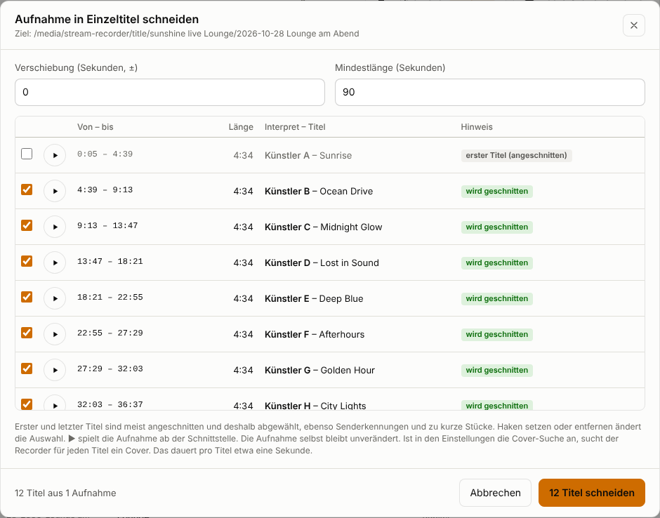
- In der Zeile der Aufnahme auf die Schere klicken, für mehrere Aufnahmen auswählen und Titel schneiden ….
- Die Liste prüfen. Mit ▶ hörst Du die Aufnahme ab der Schnittstelle, mit den Haken wählst Du Titel ab oder aus.
- … Titel schneiden klicken.
- Automatisch abgewählt sind erster und letzter Titel (meist angeschnitten), Senderkennungen und Stücke unter der Mindestlänge.
- Verlustfrei, ohne Neukodierung und ohne Ein-/Ausblenden.
- Tags: Interpret und Titel aus der Titelliste, Album = Sender, Titelnummer, Datum und Uhrzeit, Genre, Cover.
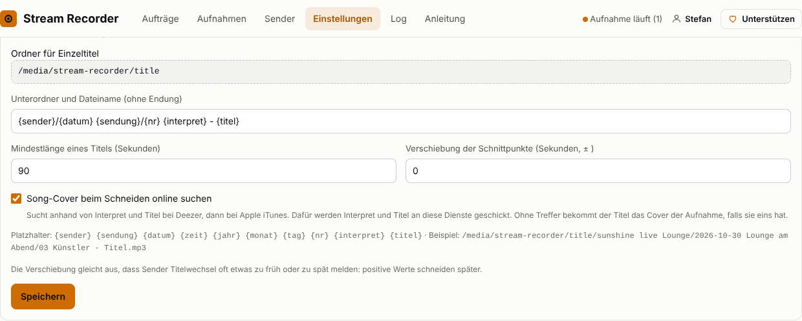
Cover
Radio-Streams enthalten keine Cover-Bilder, nur Interpret und Titel. Der Recorder sucht deshalb online, zuerst bei Deezer, dann bei Apple iTunes.
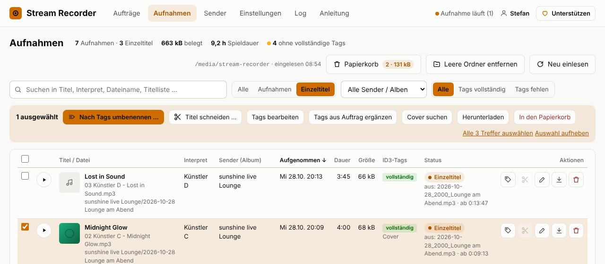
- Beim Schneiden automatisch, solange „Song-Cover beim Schneiden online suchen“ an ist. Nachträglich mit Cover suchen oder im Tag-Dialog.
- Lieber keins als ein falsches: Ein Treffer wird nur übernommen, wenn Interpret und Titel gut übereinstimmen. Ohne Treffer bekommt der Titel das Cover der Aufnahme, falls sie eins hat.
11. Papierkorb und leere Ordner
In den Papierkorb (in der Zeile oder in der Auswahlleiste) verschiebt Dateien nach /media/stream-recorder/deleted. Die Unterordner bleiben dabei erhalten, z. B. deleted/record/sunshine live Lounge/2026-10/…. So weiß der Recorder, wohin die Datei zurückgehört.
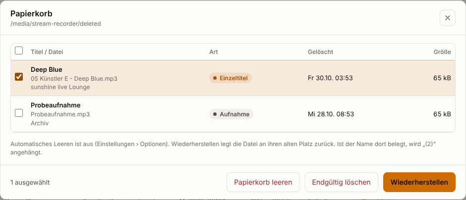
- Der Knopf Papierkorb oben auf der Seite Aufnahmen zeigt Anzahl und Größe und öffnet die Liste.
- Wiederherstellen legt die Dateien an ihren alten Platz zurück. Ist der Name dort inzwischen belegt, kommt „(2)“ dazu.
- Endgültig löschen und Papierkorb leeren löschen wirklich. Das lässt sich nicht rückgängig machen.
- Automatisch leeren: Unter Einstellungen › Optionen „Papierkorb automatisch leeren nach (Tagen)“ setzen, z. B. 30. Dateien, die länger im Papierkorb liegen, werden dann endgültig gelöscht. 0 = nie (Standard).
- Dateien, die Du selbst in den Ordner
deletedlegst, erscheinen ebenfalls im Papierkorb.
Leere Ordner
- Automatisch: Ist unter Einstellungen › Optionen „Leer gewordene Ordner nach dem Löschen automatisch entfernen“ an (Standard), entfernt der Recorder nach „In den Papierkorb“ die dadurch leer gewordenen Ordner, auch mehrere Ebenen nach oben.
- Von Hand: Leere Ordner entfernen oben auf der Seite Aufnahmen sucht alle leeren Ordner, zeigt sie an und entfernt sie nach Bestätigung.
.DS_Store, ._… oder Thumbs.db zählen nicht. Die Hauptordner record, title und deleted und versteckte Ordner werden nie entfernt.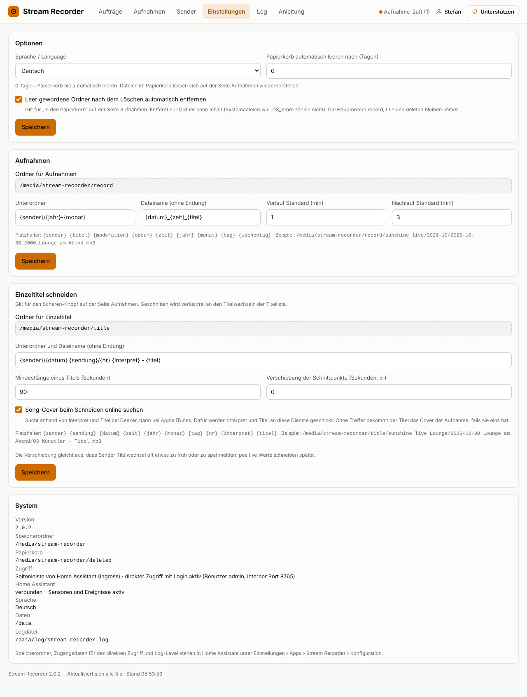
12. Ordner und Dateinamen
| Ordner | Inhalt |
|---|---|
/media/stream-recorder/record | Aufnahmen |
/media/stream-recorder/title | geschnittene Einzeltitel |
/media/stream-recorder/deleted | Papierkorb |
Den Speicherordner änderst Du in der Konfiguration der App (Abschnitt 2). Weil die Dateien unter /media liegen, findest Du sie auch im Medienbrowser von Home Assistant und kannst sie dort abspielen.
Unter Einstellungen › Aufnahmen legst Du Unterordner und Dateinamen mit Platzhaltern fest:
| Platzhalter | wird zu |
|---|---|
{sender} | Name des Senders, z. B. „sunshine live Lounge“ |
{titel} {moderation} | Titel und Moderation des Auftrags |
{datum} {zeit} | 2026-10-24, 2100 (Startzeit der Sendung) |
{jahr} {monat} {tag} {wochentag} | 2026, 10, 24, Samstag |
Standard ist {sender}/{jahr}-{monat} und {datum}_{zeit}_{titel}, also zum Beispiel:
/media/stream-recorder/record/sunshine live Lounge/2026-10/2026-10-24_2100_Deep House Session.mp3Nicht erlaubte Zeichen (/ : ? * " < > |) werden zum Bindestrich. Gibt es die Datei schon, kommt „(2)“ dazu. Während der Aufnahme heißt die Datei ….mp3.part.
14. Home Assistant: Sensoren, Ereignisse, Befehle
Sensoren
Die App legt diese Entitäten in Home Assistant an und hält sie aktuell:
| Entität | Inhalt |
|---|---|
binary_sensor.stream_recorder_recording | on, solange aufgenommen wird. Attribute: Anzahl, Titel, Sender, aktueller Musiktitel, Datenrate, Ende |
sensor.stream_recorder_next_recording | Startzeit der nächsten Aufnahme (Zeitstempel). Attribute: Titel, Sender, Dauer, Wiederholung |
sensor.stream_recorder_last_recording | Status der letzten Aufnahme: ok, aborted oder error. Attribute: Titel, Sender, Meldung, Datei, Start, Ende, Dauer |
sensor.stream_recorder_planned | Anzahl geplanter Aufträge, Attribut next mit den nächsten fünf |
sensor.stream_recorder_disk_free | freier Speicher in GB |
Die Entitäten gehören zu keinem Gerät und lassen sich nicht in der Oberfläche umbenennen. Nach einem Neustart von Home Assistant legt die App sie innerhalb von 10 Minuten wieder an.
Ereignisse
Nach jeder Aufnahme feuert die App das Ereignis stream_recorder_finished, bei Fehlern zusätzlich stream_recorder_error. Die Daten: title, sender, status, message, file, duration_s, started, ended.
Beispiel: Benachrichtigung bei einem Fehler:
alias: "Stream Recorder: Fehler melden"
triggers:
- trigger: event
event_type: stream_recorder_error
actions:
- action: notify.notify
data:
title: "Aufnahme fehlgeschlagen"
message: "{{ trigger.event.data.title }}: {{ trigger.event.data.message }}"Befehle: Aufnahme starten und stoppen
Mit der Aktion hassio.app_stdin starten oder stoppen Automationen und Skripte eine Aufnahme:
# Sofort aufnehmen (Sender wie unter „Sender“ benannt, Dauer in Minuten)
action: hassio.app_stdin
data:
app: f91e2bd5_stream_recorder
input:
action: record
sender: sunshine live Lounge
duration: 60
title: Aufnahme per Automation
# Laufende Aufnahme(n) stoppen – ohne title alle
action: hassio.app_stdin
data:
app: f91e2bd5_stream_recorder
input:
action: stop
title: Aufnahme per Automation- Statt
sendergeht auchurlmit einer Stream-Adresse. Ohne beides nimmt die App den ersten Sender der Liste. - Den genauen Namen der App (
app:) siehst Du in der Adresszeile, wenn Du die App unter Einstellungen › Apps öffnest. Er beginnt mit einer Kennung des Repositorys, z. B.f91e2bd5_stream_recorder. - Abgelehnte Befehle (z. B. unbekannter Sender) stehen im Log der App.
15. Log
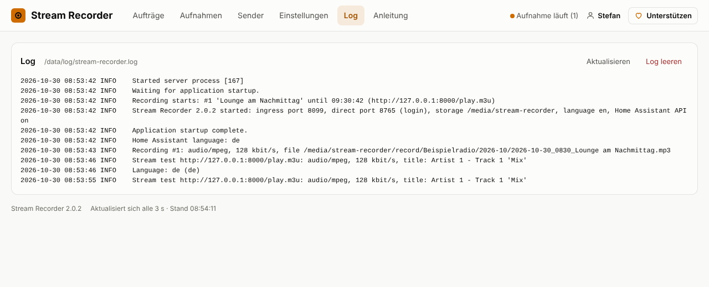
Das Menü Log zeigt die letzten 400 Zeilen. Warnungen erscheinen gelb, Fehler rot. Log leeren löscht die Einträge. Die App schreibt bewusst nur in ihr eigenes Log (Datei /data/log/stream-recorder.log im App-Container) und nicht ins Log von Home Assistant. Wie ausführlich, stellst Du in der Konfiguration der App ein. Ab 5 MB beginnt eine neue Datei, drei alte bleiben erhalten.
16. Fehlerbehebung
| Problem | Ursache und Lösung |
|---|---|
| Seitenleiste zeigt einen Fehler | Die App läuft nicht. Unter Einstellungen › Apps › Stream Recorder starten und „Beim Booten starten“ einschalten |
| Direkter Zugriff: „nicht eingerichtet“ | Benutzername oder Passwort fehlen in der Konfiguration der App |
| Direkter Zugriff: Seite lädt nicht | Unter Netzwerk in der Konfiguration ist kein Port eingetragen |
| Stream-Test: HTTP 404 / 403 | Adresse falsch oder veraltet. Aktuelle Stream-URL auf der Webseite des Senders suchen |
| „Antwort ist eine Webseite“ | Die URL führt zur Player-Seite. Die direkte Stream- oder .m3u-Adresse verwenden |
| „HLS-Streams werden nicht unterstützt“ | Der Sender bietet nur HLS (.m3u8). Nach einer MP3- oder AAC-Adresse suchen |
| Fehler „verpasst“ | App oder Home Assistant liefen zur Startzeit nicht (Neustart, Update, Stromausfall) |
| „unvollständig“ mit vielen Unterbrechungen | Internet oder Sender instabil. Die Datei enthält alles, was ankam |
| „Speicherordner ist nicht erreichbar“ | Netzwerkfreigabe nicht eingebunden oder falscher Speicherordner in der Konfiguration |
| Keine Titelliste in der Datei | Der Stream sendet keine Titel-Infos (Sender-Test: „ICY: nein“) |
| Schere ist ausgegraut | Keine Titelliste, keine MP3 oder schon ein Einzeltitel. Der Tooltip nennt den Grund |
| Sensoren fehlen in Home Assistant | Systeminfo unter Einstellungen zeigt, ob die Verbindung steht. Nach einem Neustart von HA bis zu 10 Minuten warten |
| Speicher läuft voll | Alte Dateien in den Papierkorb legen und den Papierkorb leeren oder automatisch leeren lassen |
17. Kurzreferenz
| Was | Wo |
|---|---|
| Oberfläche | Seitenleiste von Home Assistant, optional http://<IP>:<Port>/ |
| Konfiguration | Einstellungen › Apps › Stream Recorder › Konfiguration |
| Aufnahmen / Einzeltitel / Papierkorb | /media/stream-recorder/record, …/title, …/deleted |
| Datenbank, Log | im Datenordner der App (/data), im Backup von Home Assistant enthalten |
| Quellcode, Fehler melden | github.com/BreitiDE/ha-stream-recorder |